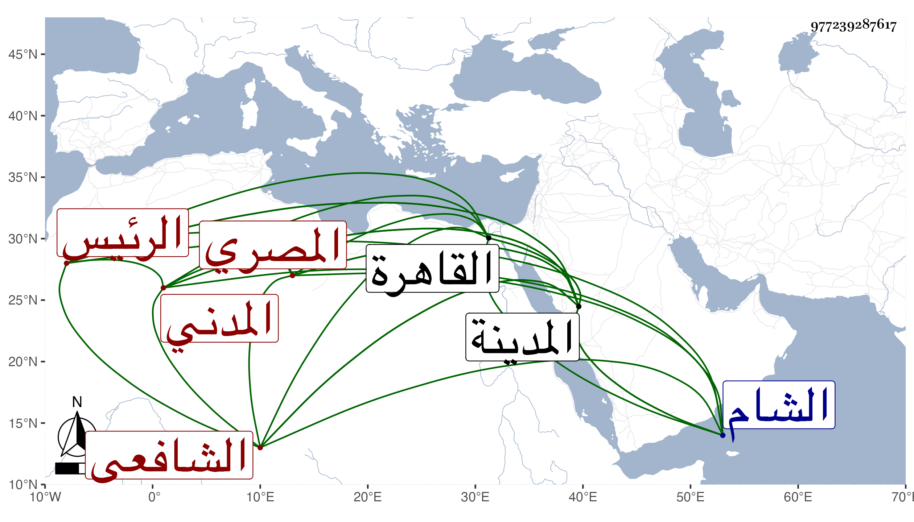

0902Sakhawi.DawLamic.ITO20230111-ara1.EIS1600.977239287617
Biography ID: 977239287617
267
أحمد بن محمد بن أحمد بن محمد بن محمد بن محمد الشهاب بن الشمس المصري الأصل المدني الشافعي الرئيس هو وجد أبيه فمن يليه بالمدينة الشريفة ويعرف بابن الريس وبابن الخطيب . ولد في رابع شوال سنة أربع وستين وثمانمائة بالمدينة ونشأ بها فحفظ المنهاج والعمدة وسمع بها واشتغل وأخذ عني بها الكثير ثم قدم القاهرة في سنة خمس وتسعين فاشتغل عند مدرسي الوقت ودخل الشام وغيرها ولا بأس به .
